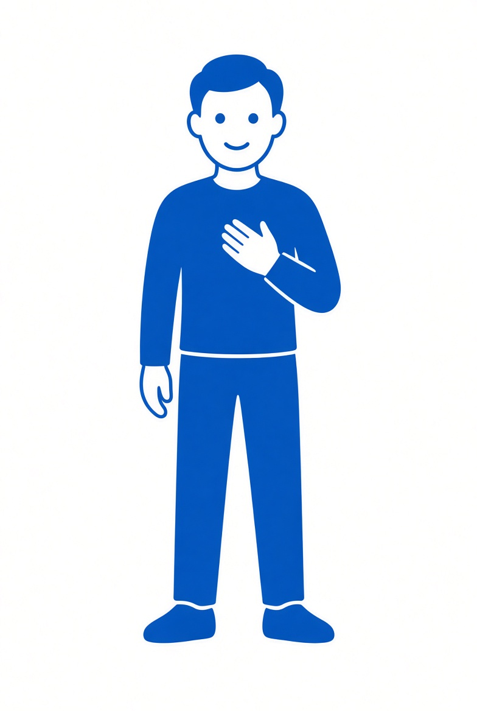
zijn
to be
onregelmatigrang 1Abstract & generalgetekend
wasis geweest
- Scene
- one adult stands facing the viewer, feet apart and planted, and lays an open palm flat on their own chest; the other arm hangs relaxed at the side. The figure stands alone in the middle of the frame. This is the conventional "this is me" gesture for being; nothing else in the picture.
- Must read
- a standing person with an open palm on their own chest.
- Avoid
- a hand pointing away at someone else (wijzen); a hand pressed to the stomach (buikpijn); arms folded across the chest (boos); a name tag, badge or any lettering; both hands raised.
- Alt text
- Iemand staat recht voor de kijker met een open handpalm op de eigen borst.
zijn.png · rang 1 · A0 onregelmatig · lexicon woorden.tsv

hebben
to have
onregelmatigrang 29Abstract & generalgetekendopnieuw tekenen
hadheeft gehad
- Scene
- one adult faces the viewer, hugging a closed cardboard box against the chest with both arms, chin on its top edge, the shoulders turned in a little to keep it close. Nothing else is in the picture: no symbol, no second person.
- Must read
- a box held tight to the chest with both arms.
- Avoid
- a box passing between two hands (geven); a shopping bag held by the handle at the side (kopen); a box carried while walking (dragen); a lid lifting off the box (openmaken); a padlock or a key (houden).
- Alt text
- Iemand drukt een dichte doos met beide armen tegen de borst.
hebben.png · rang 29 · A0 onregelmatig · lexicon woorden.tsv
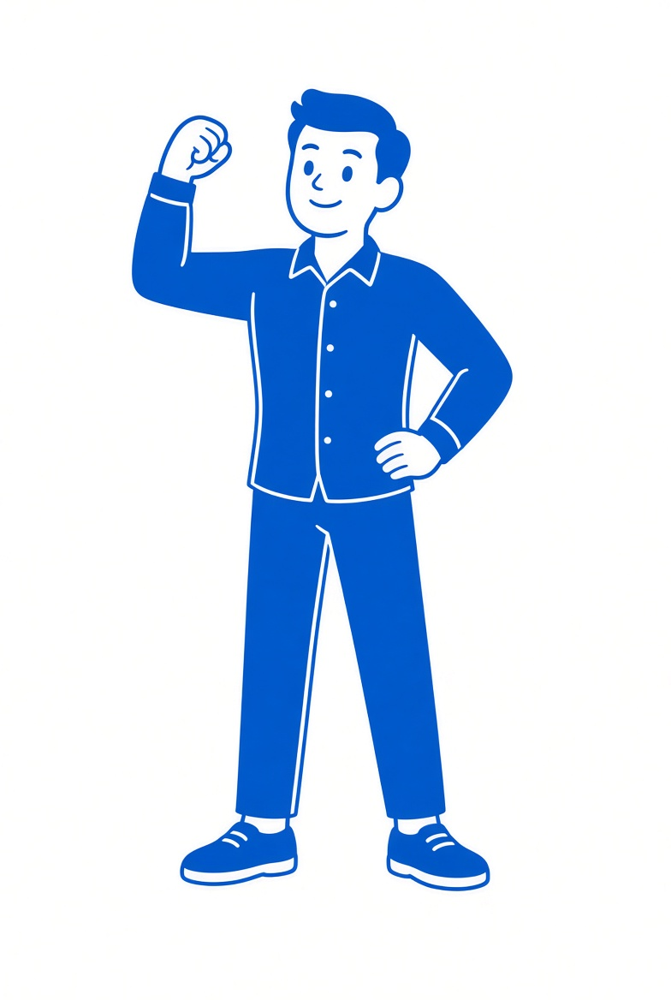
kunnen
to be able to
onregelmatigrang 37Abstract & generalgetekend
konheeft gekund
- Scene
- one adult stands upright facing the viewer, right arm raised to the side with the elbow bent and the fist closed and flexed, chin lifted, eyes on the viewer and a slight smile. No object in the hand, no second figure, no furniture, no bubble. This is the conventional flexed-arm gesture for being able to.
- Must read
- a raised arm with a tight flexed fist and a confident face.
- Avoid
- the fist striking an object (slaan); a heavy weight pressing the arm down (moeten); both hands reaching behind glass (willen); a hand raised in a greeting wave (zwaaien); a fist with the thumb up.
- Alt text
- Iemand staat rechtop met een opgeheven arm en een gebalde vuist, en kijkt de kijker zelfverzekerd aan.
kunnen.png · rang 37 · A0 onregelmatig · lexicon woorden.tsv

gaan
to go
onregelmatigrang 44Movement & positiongetekend
gingis gegaan
- Scene
- one adult is seen from behind at the left edge of the frame, mid-step towards a closed door in the right-hand wall: one foot flat, the other heel just lifted, arms swinging, head turned to the door. The floor between the person and the door is empty.
- Must read
- from behind, a walking person heading straight for a door.
- Avoid
- a person coming through the door towards the viewer (komen); both feet off the ground (rennen); a hand on the handle with the door half open (weggaan); a suitcase beside the door (vertrekken).
- Alt text
- Iemand met de rug naar de kijker loopt met een opgeheven voet recht op een gesloten deur af.
gaan.png · rang 44 · A0 onregelmatig · lexicon woorden.tsv
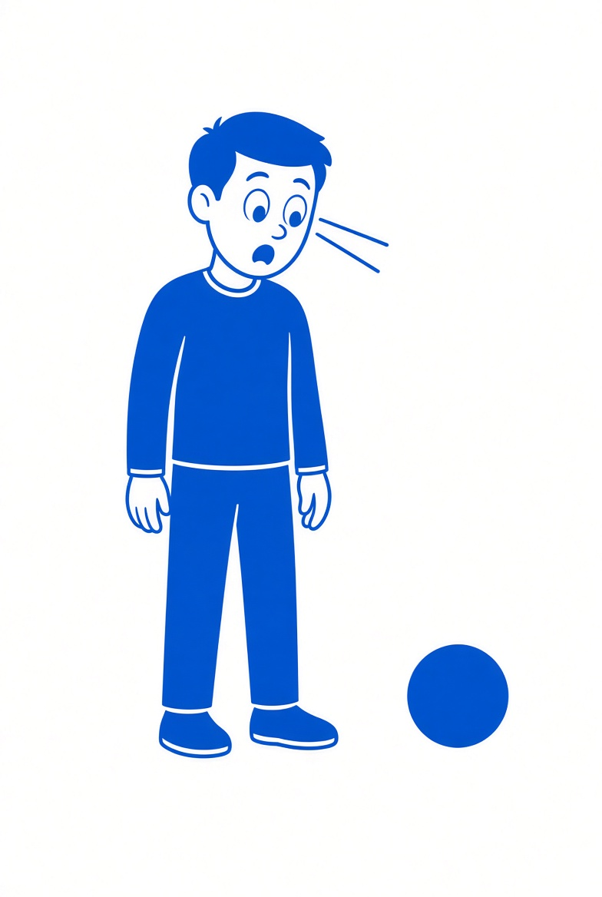
zien
to see
onregelmatigrang 57Abstract & generalgetekendopnieuw tekenen
zagheeft gezien
- Scene
- one adult stands in a bare room and has just noticed a ball lying on the floor a few steps away: the head is turned to it, the eyes wide and the eyebrows up, and two short straight lines run from the eyes to the ball. The hands hang at the sides.
- Must read
- wide eyes with short sight lines running to a ball on the floor.
- Avoid
- a hand shading the eyes and a long look at the horizon (kijken); both hands held up in front of the face (verstoppen); a hand reaching under a cushion (zoeken); eyes on a phone screen (lezen); a hand closing round the ball (pakken).
- Alt text
- Iemand staat in een lege kamer en merkt met grote ogen een bal op de vloer op.
zien.png · rang 57 · A0 onregelmatig · lexicon woorden.tsv

moeten
to have to
onregelmatigrang 58Abstract & generalgetekend
moestheeft gemoeten
- Scene
- one adult stands bowed forward under a large plain sack lying across the shoulders, both hands holding its edges, knees slightly bent, face pushed forward. No second person, no trolley, no ground pattern. This is the conventional metaphor for having to, the heavy weight on the back; draw it plainly.
- Must read
- a person bent under a heavy sack lying across the shoulders.
- Avoid
- a raised arm with a flexed fist (kunnen); both hands reaching behind glass (willen); a bag carried by one handle at the side (dragen); a pointed finger of command (bevelen); a clock on the wall.
- Alt text
- Iemand staat voorovergebogen onder een zware zak op de schouders en houdt de randen met beide handen vast.
moeten.png · rang 58 · A0 onregelmatig · lexicon woorden.tsv
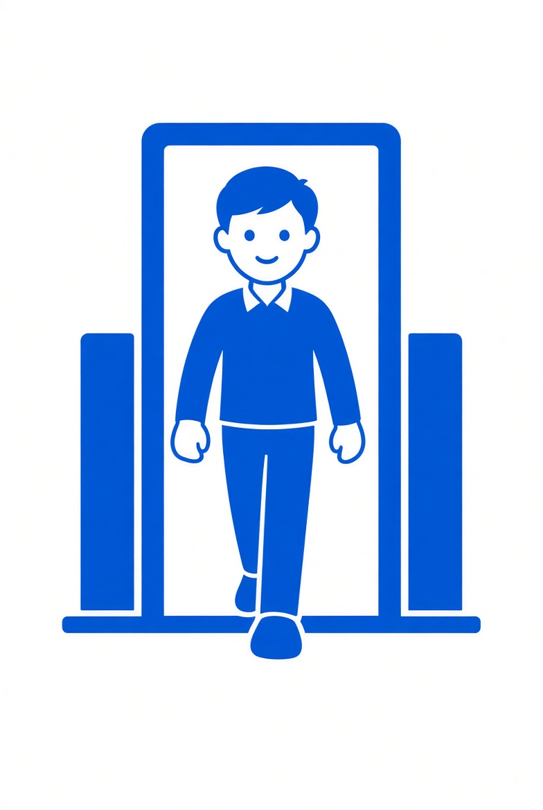
komen
to come
onregelmatigrang 73Movement & positiongetekend
kwamis gekomen
- Scene
- one adult steps through an open doorway towards the viewer, front foot on the ground and back foot still on the threshold, arms swinging, head up and eyes on the viewer. The wall runs left and right of the doorway, and the floor in front of the person is empty.
- Must read
- through a doorway, walking towards the viewer with the back foot on the threshold.
- Avoid
- a person seen from behind heading for a closed door (gaan); both feet off the ground (rennen); a hand pushing the door shut (sluiten); someone waving both arms (groeten).
- Alt text
- Iemand stapt door een open deur naar de kijker toe; de achterste voet staat nog op de drempel.
komen.png · rang 73 · A0 onregelmatig · lexicon woorden.tsv

willen
to want
onregelmatigrang 100Abstract & generalgetekend
wilde / wouheeft gewild
- Scene
- one adult stands with both hands pressed flat against a tall glass sheet that reaches the floor, nose close to the glass, eyes wide and mouth open. One plain ball lies behind the glass. This is the conventional metaphor for wanting, both hands reaching for something behind glass; draw it plainly.
- Must read
- two hands flat on the glass, looking in at a ball behind it.
- Avoid
- a heavy sack on the back (moeten); a raised flexed fist (kunnen); coins and notes on a counter (betalen); a hand wiping the glass clean (poetsen).
- Alt text
- Iemand drukt beide handen plat tegen een glasplaat en kijkt met grote ogen naar een bal erachter.
willen.png · rang 100 · A0 onregelmatig · lexicon woorden.tsv

geven
to give
onregelmatigrang 112Abstract & generalgetekend
gafheeft gegeven
- Scene
- two adults stand facing each other an arm's length apart. The person on the left holds out a closed cardboard box with both hands; the person on the right has both hands already closed around the far side of the box, so only hands and box touch. Both look at the box.
- Must read
- a box passing from hand to hand between two people who face each other.
- Avoid
- one person alone pressing a box to the chest (hebben); an open empty palm held out (vragen); coins and notes on a counter (betalen); a box with a ribbon and bow (cadeau); one hand lifted in a wave (zwaaien).
- Alt text
- Twee mensen staan tegenover elkaar met een doos tussen hun handen.
geven.png · rang 112 · A0 onregelmatig · lexicon woorden.tsv
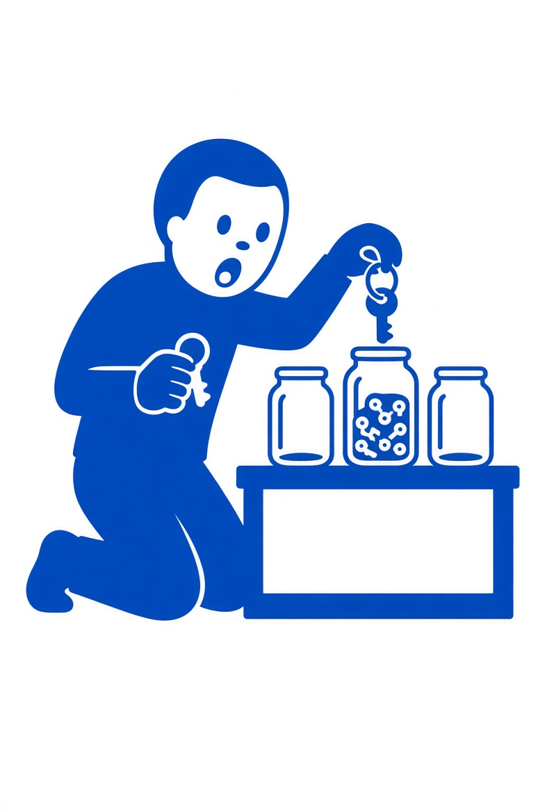
vinden
to find
onregelmatigrang 114Abstract & generalgetekend
vondheeft gevonden
- Scene
- one adult kneels on the floor beside a low plain shelf, both hands lifting a key on a ring out of a glass jar that stood behind the front row of jars; the eyes are on the key and the mouth is open in surprise. A second key is already in the other fist.
- Must read
- a key lifted out of a jar by a person who has just spotted it.
- Avoid
- a hand reaching deep into a bag (zoeken); a person with a phone lying on the floor (verliezen); coins counted on a counter (betalen); a hand shading the eyes on a hill (zoeken).
- Alt text
- Iemand knielt bij een lage plank en tilt een sleutel aan een ring uit een potje.
vinden.png · rang 114 · A0 onregelmatig · lexicon woorden.tsv
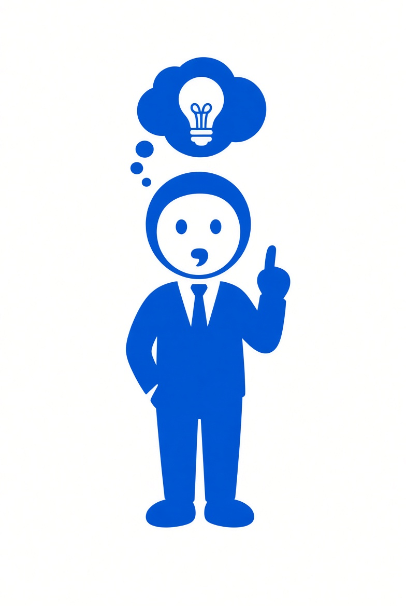
weten
to know (a fact)
onregelmatigrang 126Thought & knowledgegetekend
wistheeft geweten
- Scene
- one adult stands facing the viewer, chin up, one finger raised, mouth slightly open. Above the head floats a conventional thought bubble of three small circles rising to one cloud, and inside it a single bold bright light bulb. This is the conventional metaphor for knowing, the light going on; use no question mark.
- Must read
- a thought bubble with a bright light bulb above the head.
- Avoid
- a cloud bubble with a question mark inside (denken); a bare question mark over the head (twijfelen); a book and a finger on the page (studeren); letters or numbers of any kind (rekenen); two speech bubbles (praten).
- Alt text
- Iemand staat met een opgeheven vinger; boven het hoofd hangt een wolk met een brandende gloeilamp.
weten.png · rang 126 · A0 onregelmatig · lexicon woorden.tsv
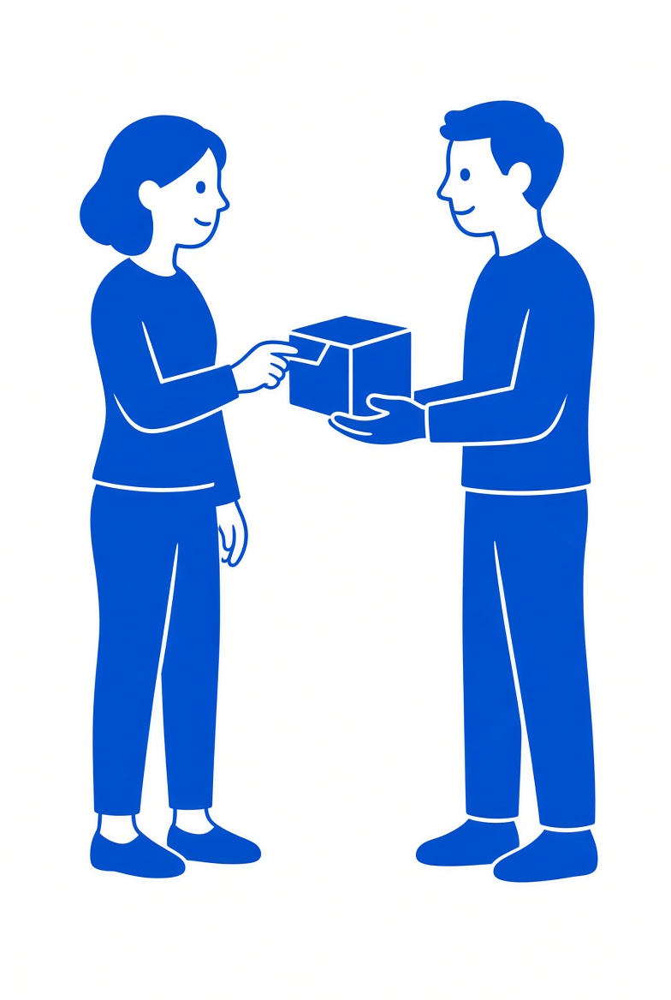
krijgen
to get
onregelmatigrang 127Abstract & generalgetekend
kreegheeft gekregen
- Scene
- two adults face each other an arm's length apart; the one on the right holds a cardboard box that has just settled on both open palms, and the one on the left still touches its near corner with two fingers. Both look at the box.
- Must read
- a box already settled in two open hands held out towards the chest.
- Avoid
- a box pushed away by two hands flat on its side (geven); coins and notes on a counter with a bag (betalen); two hands reaching behind glass (willen); a box grabbed away with a turn of the body (nemen).
- Alt text
- De doos rust al in twee open handen; de ander houdt nog twee vingers aan de hoek.
krijgen.png · rang 127 · A0 onregelmatig · lexicon woorden.tsv
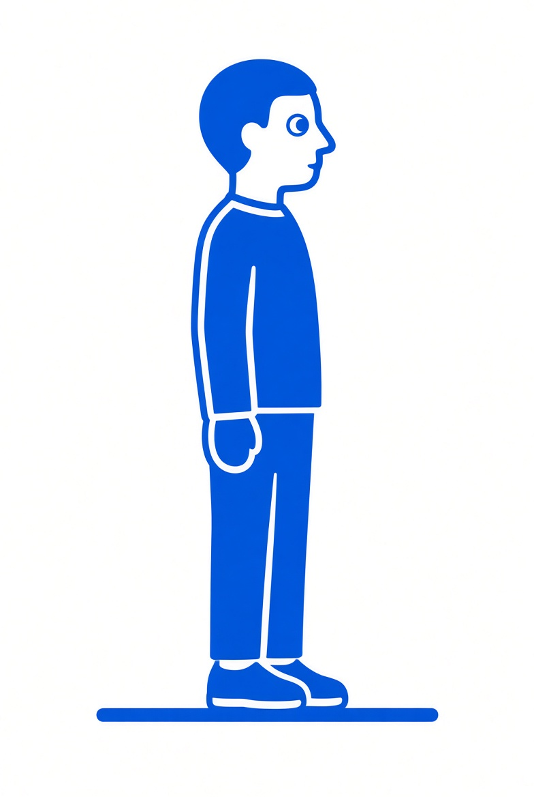
staan
to stand
onregelmatigrang 132Movement & positiongetekend
stondheeft gestaan
- Scene
- one adult stands upright, seen from the side, both feet flat on the ground and close together, arms hanging straight down along the body, eyes ahead. The ground is a single clean line and nothing is beside the feet: no chair and no bicycle.
- Must read
- both feet flat on the ground and the whole body upright and still.
- Avoid
- one foot lifted off the ground in a stride (lopen); knees bent with the seat just above a chair (zitten); both knees on the floor (knielen); a hand on a table edge to push up (opstaan).
- Alt text
- Iemand blijft rechtop overeind met beide voeten plat naast elkaar en de armen langs het lichaam.
staan.png · rang 132 · A0 onregelmatig · lexicon woorden.tsv
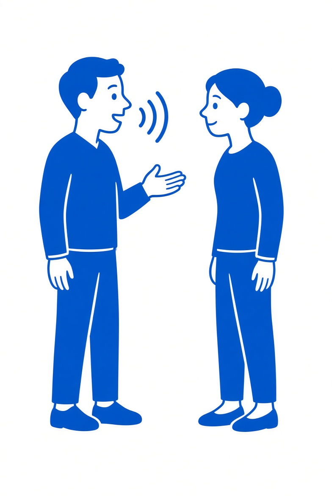
zeggen
to say
onregelmatigrang 133Communication & languagegetekend
zeiheeft gezegd
- Scene
- one adult stands facing a second adult a metre away, head turned to them, mouth open mid-word and one hand raised at chest height with the palm up. The second faces the speaker and nods slightly. One soft curved line of sound marks leaves the speaker's mouth; nobody else is in the frame.
- Must read
- one person mid-word with a raised open hand, the other listening.
- Avoid
- a hand cupped at the ear (luisteren); speech bubbles over both heads (praten); a finger raised high with a bright thought bubble (weten); a hand held flat over the mouth (zwijgen); a raised open palm with nothing said (vragen).
- Alt text
- Iemand staat tegenover een ander en spreekt met een open mond en een opgeheven hand.
zeggen.png · rang 133 · A0 onregelmatig · lexicon woorden.tsv
geen beeld
zullen
will
onregelmatigrang 137Abstract & general
zougeen voltooid deelwoord
- Scene
- one adult stands still beside an open doorway, facing it, and a single bold arrow runs from the feet forward through the doorway and out of the frame. This is the conventional metaphor for the future, will; draw only that one arrow, no clock and no calendar.
- Must read
- a standing person with one bold arrow running ahead through a doorway.
- Avoid
- a person walking with one foot lifted towards a closed door (gaan); an arrow on a road sign (leiden); a clock or a calendar; a person stepping out with a suitcase (vertrekken).
- Alt text
- Iemand staat stil bij een open deur; een dikke pijl loopt vanaf de voeten door de deuropening naar buiten.
zullen.png · rang 137 · A0 onregelmatig · lexicon woorden.tsv
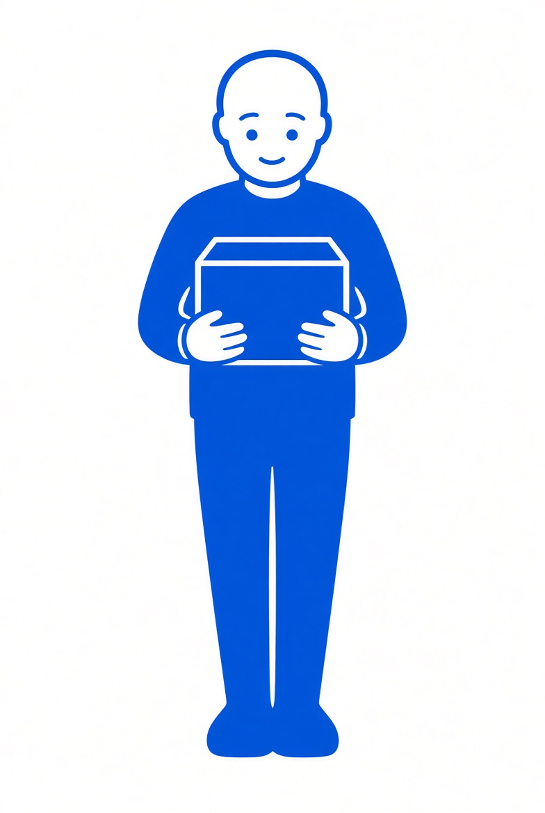
houden
to hold / to keep
onregelmatigrang 142Movement & positiongetekend
hieldheeft gehouden
- Scene
- one adult stands facing the viewer holding a closed wooden box against the chest with both hands flat on its front, elbows in, feet together; the box does not hang and is not wrapped. Nothing else is in the picture and the person's eyes rest on the box.
- Must read
- a closed box held flat and square against the chest.
- Avoid
- a box passing between two hands (geven); a box on one flat palm offered out (laten); a box with a ribbon and bow (cadeau); a hand lifting a lid off the box (openmaken).
- Alt text
- Iemand heeft een dichte houten doos met beide handen vlak tegen de borst.
houden.png · rang 142 · A0 onregelmatig · lexicon woorden.tsv
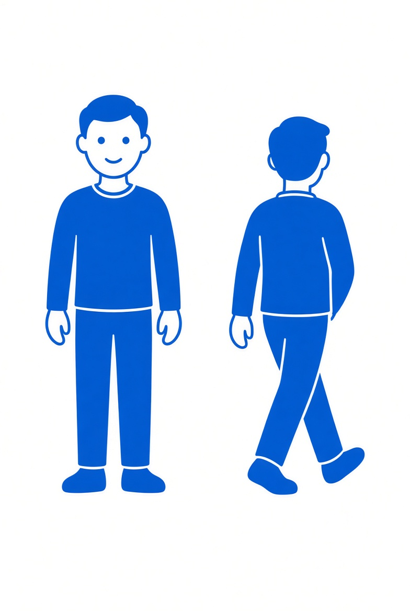
blijven
to remain
onregelmatigrang 143Abstract & generalgetekend
bleefis gebleven
- Scene
- one adult stands still at the left of the frame while a second adult walks away to the right, already small and turned from the viewer; the first keeps both feet planted and both arms at the sides, watching the other go. Only a thin empty strip of ground lies between them.
- Must read
- one person standing still while the other walks off.
- Avoid
- both people walking together (lopen); a person with a phone ringing at the ear (bellen); a person sitting on a bench (zitten); the standing person stepping after the other (volgen).
- Alt text
- Iemand staat stil met beide voeten op de grond en kijkt een ander na die wegloopt.
blijven.png · rang 143 · A0 onregelmatig · lexicon woorden.tsv

vragen
to ask
onregelmatigrang 151Communication & languagegetekend
vroegheeft gevraagd
- Scene
- two adults face each other; the one on the left leans forward with an open empty palm held out low, head tilted; the one on the right has a finger at the chin and a slight shrug. The palm opens to the sky, holds nothing, and no sound leaves either mouth.
- Must read
- an open empty palm held out low to another person.
- Avoid
- a speech line leaving the open mouth (zeggen); speech bubbles over both heads (praten); a closed box on that palm (geven); a hand cupped at the ear (luisteren); two people with crossed arms in a quarrel (ruzie maken).
- Alt text
- Twee mensen staan tegenover elkaar; de één houdt een lege handpalm op en de ander haalt de schouders op.
vragen.png · rang 151 · A0 onregelmatig · lexicon woorden.tsv
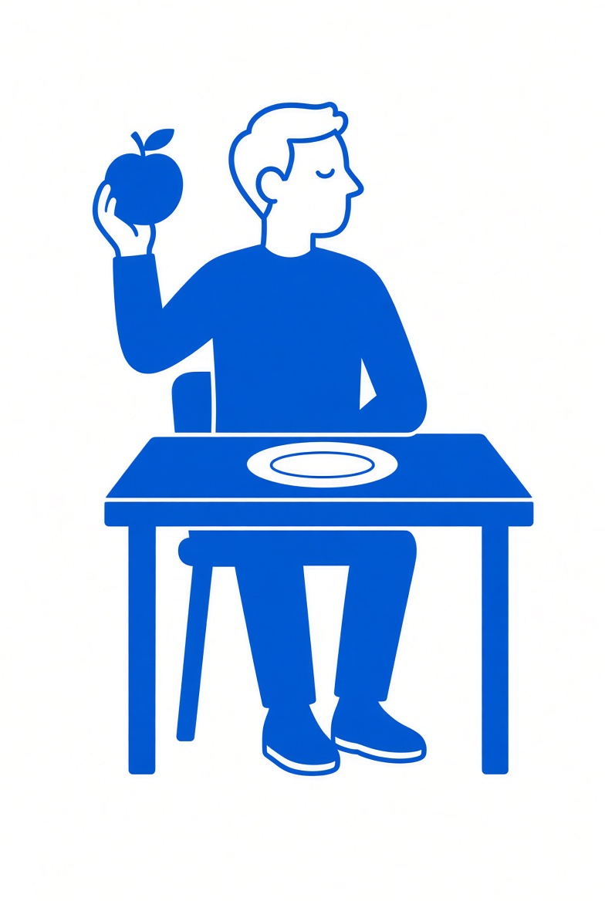
nemen
to take
onregelmatigrang 166Abstract & generalgetekend
namheeft genomen
- Scene
- one adult sits behind a plain table and closes one hand round a piece of fruit, lifting it clear of the table, the elbow raised slightly and the eyes on the fruit. The table otherwise holds one small empty plate, and no second person is there.
- Must read
- one hand closing on a piece of fruit and lifting it off the table.
- Avoid
- a hand reaching out with fingers still open (pakken); a hand with the fruit pressed to the lips (eten); two hands with a fruit passing between them (geven); a hand putting a fruit down on the plate (leggen).
- Alt text
- Iemand zit aan een tafel en tilt met duim en vingers een stuk fruit van het tafelblad.
nemen.png · rang 166 · A0 onregelmatig · lexicon woorden.tsv

kijken
to look
onregelmatigrang 175Abstract & generalgetekend
keekheeft gekeken
- Scene
- one adult stands turned half towards the viewer looking far to the left, one hand raised flat beside the temple to shade the eyes, chin up, eyebrows slightly drawn. Only a plain horizon line shows behind the person, and there is no object in the picture to rest the eye on.
- Must read
- a hand shading the eyes and a long look into the distance.
- Avoid
- wide eyes with short lines running to a ball on the floor (zien); a telescope held to one eye (turen); a hand pressed to the mouth (denken); both hands reaching behind glass (willen); a chair and a book (lezen).
- Alt text
- Iemand tuurt met een vlakke hand boven de ogen in de verte, met de kin omhoog.
kijken.png · rang 175 · A0 onregelmatig · lexicon woorden.tsv

zitten
to sit
onregelmatigrang 181Movement & positiongetekend
zatheeft gezeten
- Scene
- one adult sits on the front edge of a plain chair, both feet flat on the floor, thighs level and back upright, hands resting on the knees, eyes ahead. The chair is the only furniture and no table stands in front of it.
- Must read
- the seat on a chair with both feet flat on the floor.
- Avoid
- both legs folded on the floor with the body upright (zitten op de grond); both knees on the floor (knielen); the body upright on two flat feet (staan); one foot lifted in a step away from the chair (opstaan).
- Alt text
- Iemand rust rechtop op de rand van een stoel met beide voeten plat op de vloer.
zitten.png · rang 181 · A0 onregelmatig · lexicon woorden.tsv
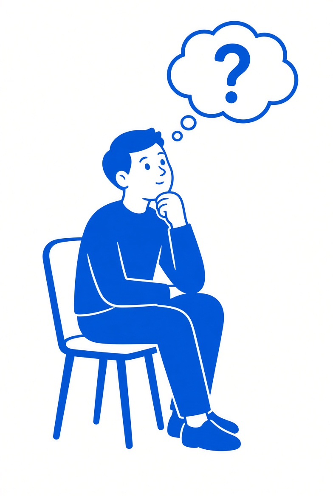
denken
to think
onregelmatigrang 194Thought & knowledgegetekend
dachtheeft gedacht
- Scene
- one adult sits on a plain chair, chin on one fist, elbow on the knee, eyes up and away. Above the head floats a conventional thought bubble: three small circles rising to one large cloud with one bold question mark inside. This is the conventional metaphor for thinking; add no light bulb.
- Must read
- a seated person with a thought bubble and a question mark above the head.
- Avoid
- a light bulb inside the bubble (weten); a bare question mark over the head with no bubble (twijfelen); a book and a pen (studeren); two people with speech bubbles (praten); a hand pressed to the mouth (twijfelen).
- Alt text
- Iemand zit met de kin op de vuist; boven het hoofd hangt een gedachtewolk met een vraagteken.
denken.png · rang 194 · A0 onregelmatig · lexicon woorden.tsv

helpen
to help
onregelmatigrang 197Character & behaviourgetekend
hielpheeft geholpen
- Scene
- two adults stand side by side, both hands on the same open cardboard box: the left person's hands under the far side, the right person's hands under the near side, and together they lift the box level off the floor. Both look at the box, not at each other.
- Must read
- one box lifted by four hands of two people.
- Avoid
- a box passing from one hand to another (geven); one person alone carrying the box (dragen); a hand holding out an empty palm (vragen); a hand laid on a shoulder (troosten).
- Alt text
- Twee mensen tillen samen één doos op: vier handen aan dezelfde doos.
helpen.png · rang 197 · A0 onregelmatig · lexicon woorden.tsv
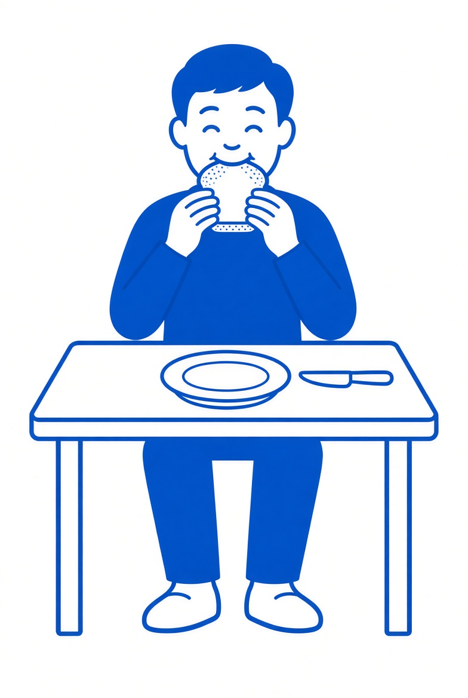
eten
to eat
onregelmatigrang 250Food & drinkgetekend
atheeft gegeten
- Scene
- one adult sits facing the viewer at a plate on a plain table, biting into a piece of bread held in both hands; bread, a knife and an empty plate lie on the table, and the cheeks are slightly full. No stove, pan or spoon in the picture.
- Must read
- an adult with a bite of bread in the mouth, sitting at a plate.
- Avoid
- a hand lifting a piece of fruit off the table (nemen); a pan on a stove and a wooden spoon (koken); a cup lifted to the open mouth (drinken); a knife cutting the bread on a board (snijden); a hand on a laptop (werken).
- Alt text
- Iemand zit aan tafel en bijt in een stuk brood, met een bord en een mes voor zich.
eten.png · rang 250 · A0 onregelmatig · lexicon woorden.tsv